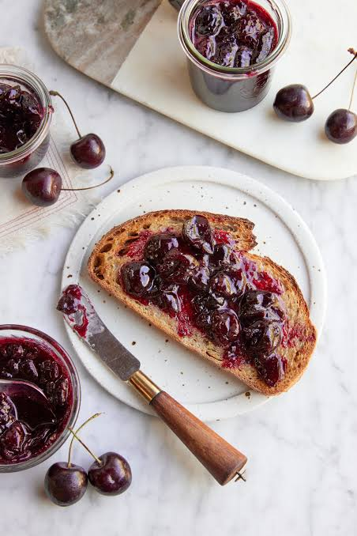
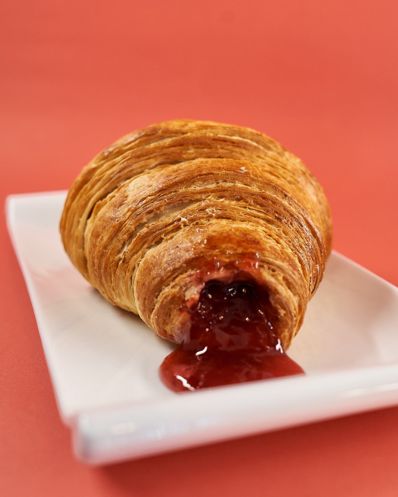

Fotografija: jabuka mlevena
Jabuka mlevena
pakovanje 6 kgOvo glatko punjenje koristi se za štrudle, pite i kolače.
Pravimo voćna punjenja i marmelade u Popučkama kod Valjeva za poslastičarnice, pekare, palačinkarnice i ugostitelje.


više od 20 godina!
Naša voćna punjenja ne razlivaju se pri pečenju i bogata su voćem. Idealna su za kroasane, pite, štrudle, krofne, palačinke i kolače.
Voćna punjenja su dostupna i u pakovanjima od 3 kg, 18 kg i 20 kg. Pitajte nas.
Ovo glatko punjenje koristi se za štrudle, pite i kolače.
Punjenje od višnje koristi se za pite, štrudle i krofne.
Punjenje sa komadićima jabuke koristi se za pite i štrudle.
Punjenje od jagode koristi se za krofne, kroasane i kolače.
Punjenje od maline koristi se za kolače, krofne i kroasane.
Punjenje od šumskog voća koristi se za kolače, pite i kroasane.
Punjenje od kajsije klasičan je izbor za kroasane i krofne.
Punjenje od pomorandže daje kolačima i pecivima miris citrusa.
Punjenje od limuna daje kolačima i kroasanima ukus citrusa.
Punjenje od suve šljive koristi se za štrudle, pite i pekarske proizvode.
Nadev od spanaća koristi se za slane pite, štrudle i pekarske proizvode.
Zanimaju vas kompletna ponuda, pakovanja i cene? Pitajte nas.
Punjenje od višnje koristi se za pite, štrudle i krofne.
Ovo glatko punjenje koristi se za štrudle, pite i kolače.
Pravimo mešanu marmeladu i marmeladu od kajsije, kao domaću.
Ova mešavina voća ima tradicionalan domaći ukus.
Marmelada od kajsije koristi se za mazanje i punjenje.
Glazura karamel koristi se za torte, kolače i krofne.
Preliv čokolada koristi se za torte, palačinke i sladoled.
Nadev vanila koristi se za kolače, krofne i peciva.
Toping jagoda koristi se za sladoled, palačinke i torte.
Toping čokolada koristi se za sladoled, palačinke i krofne.
Toping vanila koristi se za kolače, palačinke i sladoled.
Toping šumsko voće koristi se za sladoled, torte i palačinke.
Voćko je porodična firma iz Valjeva. U Popučkama pravimo voćna punjenja i marmelade više od 20 godina.
Sirovine biramo pažljivo i održavamo isti kvalitet u svakoj isporuci. Isporučujemo na vreme i u dogovorenoj količini, a sa partnerima širom Srbije radimo godinama.
Jako fina saradnja, prijatni ljudi, proizvodi odlični!
[Ovde ide utisak partnera]
[Ovde ide utisak partnera]
Pišite nam za ponudu, cene ili uzorke. Odgovaramo u najkraćem roku.
vockodoo@gmail.com